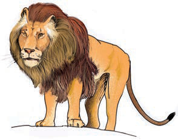
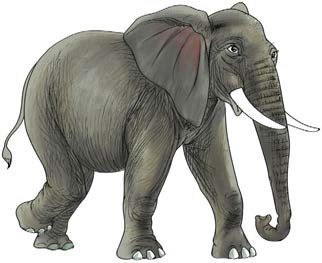

7.Soma maneno haya kwa haraka:
| mbuzi | mbuga | mbegu |
| mbuni | mbona | bomba |
| sembe | simba | shamba |
| kamba | pamba | pembe |
| pumba | tumbo | tembo |
8.Tunga sentensi kwa kutumia maneno haya.
mbio
mbegu
tumbo
mbuzi
simba
9.Soma sentensi hizi:
Tembo ni mnene.
Mbuzi amekata kamba.
Simba anaishi mbugani.
Mbuga zetu huvutia watalii.
10.Soma habari hii:



Kijiji cha Mbuza kina mbuga ya asili. Mbugani kuna simba, tembo na mbuni. Watalii hutembelea mbuga hiyo. Mbugani kunafurahisha.